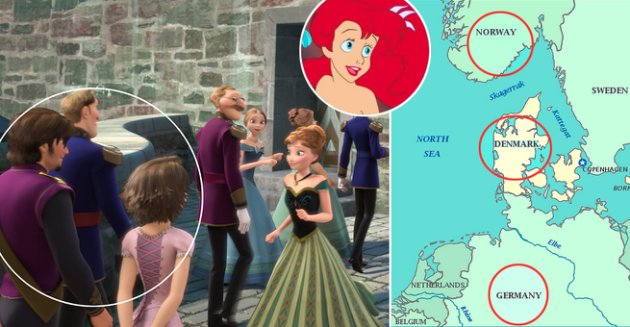
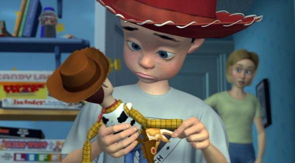

Teori ini tidak dapat disangkal mengingat kalau Walt Disney Company adalah salah satu konglomerat hiburan tertua dan paling sukses di Amerika Serikat. Perusahaan ini didirikan pada 1923 dan saat ini memiliki banyak anak perusahaan terkenal. Disney telah lama memiliki jaringan ABC dan semua jaringan afiliasinya, termasuk ESPN. Perusahaan ini kembali menjadi berita utama internasional pada 2009 ketika mereka mengakuisisi Marvel Entertainment lebih dari US$4 miliar (Rp63,7 triliun) dan pada 2012 ketika mengakuisisi Lucasfilm dengan biaya lebih dari US$4 miliar. "House of Mouse" mungkin menjadi perusahaan yang paling berpengaruh dan kuat dari segelintir perusahaan besar yang mengendalikan sebagian besar media di Amerika Serikat dengan ekstensi dunia. Tidak dapat disangkal bahwa meskipun secara tradisional mereka berorientasi pada bisnis keluarga, Disney juga telah membuat citra seksual pada potongan film-film, karya poster promosi, dan artwork. Teori konspirasi juga menyebut Disney telah melakukan "pelecehan" terhadap anak-anak.Dilansir laman The Conspiracy Zone, Perusahaan Disney ingin menyedot semua uang dari dompet orang dewasa sambil membuat anak-anak mereka patuh (konsumen yang patuh). Paparan awal terhadap gambar-gambar seksual merupakan langkah pertama dalam proses itu. Mereka melakukannya karena mereka jahat layaknya Iblis dan dari sinilah beberapa teori konspirasi tentang budaya populer mulai saling terikat.
Adapun perdebatan keterkaitan antara disney dengan pixar
"Frozen," "Tangled," dan "The Little Mermaid" terjadi dalam satu dunia
 Seperti yang pernah kami tunjukkan sebelumnya, ada sebuah momen dalam film “Frozen” di mana Anda bisa melihat Rapunzel dan Flynn/Eugene, tokoh utama film “Tangled”, tiba untuk menghadiri penobatan Elsa.Secara geografis, itu mudah untuk dijelaskan. “Tangled” berlokasi di Jerman (kisah Rapunzel aslinya merupakan dongeng Jerman) dan “Frozen” nampaknya terjadi di Norwegia (berdasarkan keindahan arsitektur/budaya serta latar Skandinavia dari dongeng aslinya “The Snow Queen” karya Hans Christian Andersen). Namun kenapa Rapunzel dan Flynn hadir di pesta itu? Di momen inilah menariknya, lewat sebuah teori yang dijabarkan Beautiful Syn yang mendapat banyak komentar Facebook.Teori itu berpendapat bahwa orangtua Elsa dan Anna dari “Frozen” sedang berlayar untuk menghadiri perayaan kembalinya Rapunzel. Ketika berlayar dari Norwegia ke Jerman, kapal itu akan melintas dekat Denmark, yang menjadi lokasi kapal itu tenggelam.Bagaimana kami mengetahui hal itu? Karena Anda bisa melihat reruntuhannya di “The Little Mermaid”, yang bisa dibilang terjadi di sekitar Denmark (dongeng Andersen lainnya, yang berlatar di kampung halamannya).
Ibu Andy merupakan pemilik asli Jessie dalam “Toy Story”
 Kami juga menyukai yang satu ini, dan betul-betul tidak ada bukti yang bertentangan, jadi kami mendukung kisah ini menjadi cerita resmi Pixar secepatnya. Jessie, gadis rodeo dari film “Toy Story”, merupakan salah satu teman baik Woody dan akhirnya menjadi pacar Buzz Lightyear. Jessie dihantui kenangan atas Emily, mantan pemiliknya yang suatu hari entah kenapa meninggalkannya di sebuah kotak amal, sebuah pengalaman traumatik yang menyebabkan Jessie menderita klaustrofobia (takut tempat tertutup) dan ketakutan intens saat dimasukkan ke dalam kotak penyimpanan. Emily mungkin saja ibunya Andy, yang hanya disebut sebagai Ms. Davies sepanjang trilogi “Toy Story”. Topi Jessie memiliki desain agak khusus dengan pita dan renda putihnya... faktanya, topi itu sangat mirip dengan yang dikenakan Andy dari waktu ke waktu. Topi itu juga merupakan topi yang sama yang pernah kita lihat dalam adegan kilas balik – di tempat tidur Emily! Ada banyak bukti yang dijabarkan dalam teori Jon Negroni, yang bisa Anda baca dan lihat seperti diilustrasikan di Slate.com. Tambahan itu tentunya tambahan menarik untuk teori Pixar yang dicetuskan Negroni.